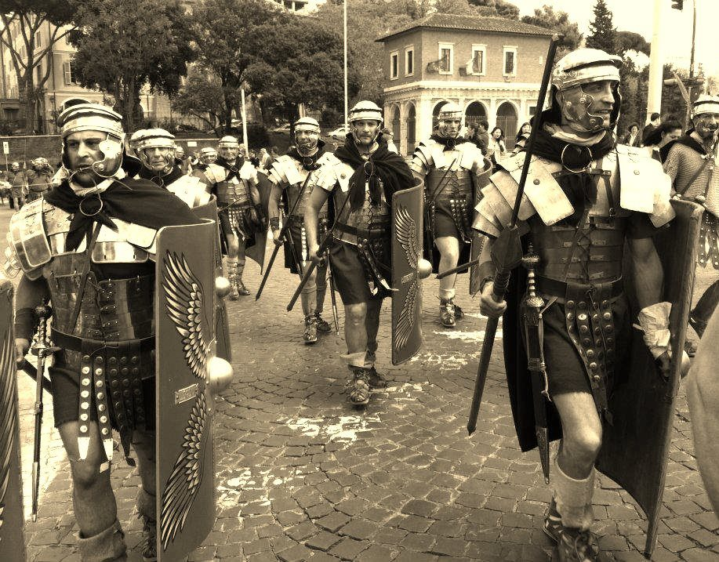
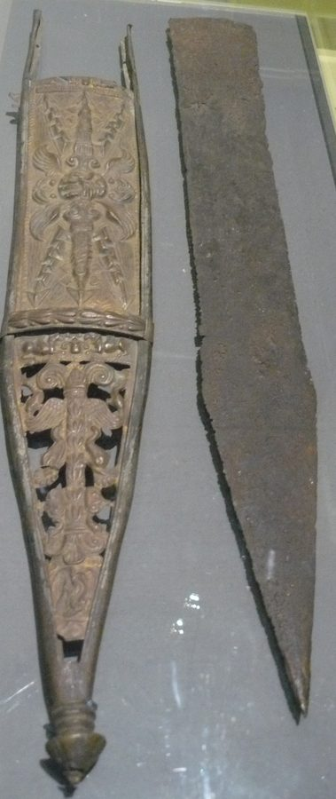
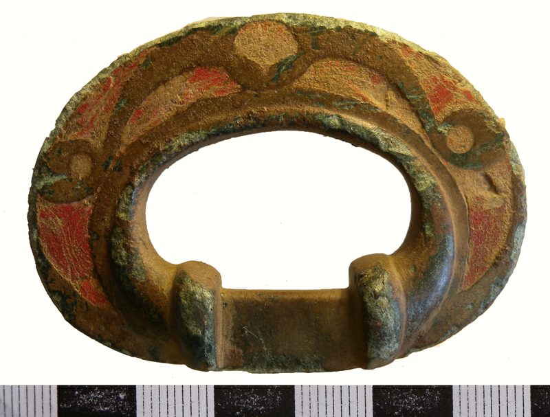
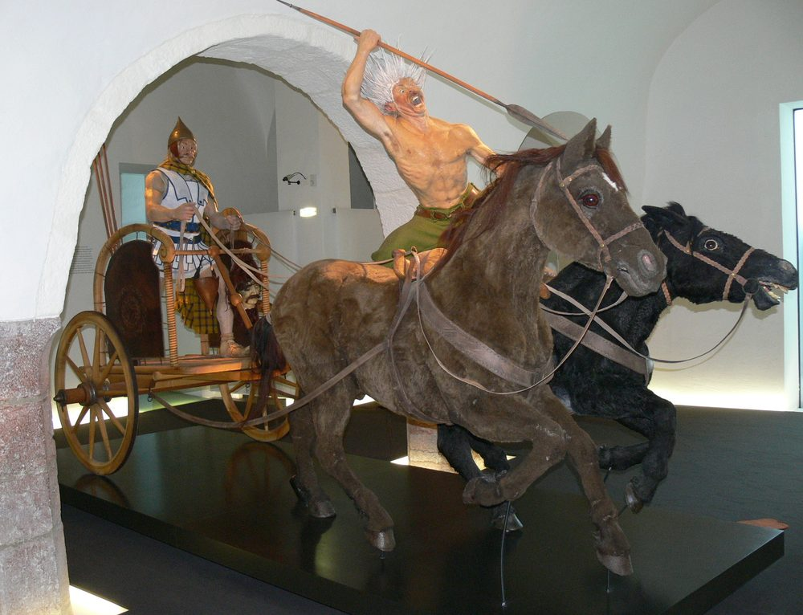

Unit 4 · Boudicca · Lesson 9
The final battle: Celtic fighting methods, Roman weapons and tactics
A Roman army of about ten thousand faced a far larger British host. How did each side fight, how do our two writers tell it, and how do we analyse why the Romans won?
Year 11 Ancient History · Present with → or space · Read on a phone with R

Review · books closed · 6 minutes · press K for the timer
Six questions from Lessons 1–8
- Where did the Iceni live, and how do historians know? Norfolk, north Suffolk and fenland Cambridgeshire. Tacitus gives their name (Annals 12.31), and the find-spots of their coins give the place.
- What was the procurator’s job, and who held it when the revolt began? He ran the province’s finances and taxes. Decianus Catus.
- What was a colonia, and which was the first in Britain? A town of Roman citizens, often veterans. Camulodunum (Colchester).
- Why did Suetonius give up Londinium, according to Tacitus? His force was too small (“scanty”) and the Ninth’s defeat warned him, so he “resolved to save the province at the cost of a single town” (Annals 14.33).
- What was the Fenwick hoard, and what does it suggest? Gold and silver jewellery buried in a small pit in the floor of a house in Colchester, found in 2014 under the burnt debris of the revolt. It suggests that someone hid their valuables, “presumably for safekeeping in anticipation of the revolt” (Colchester Heritage Explorer), and never recovered them.
- Writing · nominalise: “The Romans seized the Iceni’s estates, and this angered the nobles.” “The Romans’ seizure of the Iceni’s estates angered the nobles.” The action (seized) becomes a noun (the seizure), so it can be the subject of the sentence, and the next sentence can build on it (“This seizure …”).
Mark your own answers in a different colour. Which question did you find hardest?
Learning intentions and success criteria · 2 minutes
Today’s goals
- analyse Celtic fighting methods and Roman weapons and tactics
- analyse why the Romans won, naming who did what
- describe three Celtic fighting methods and three Roman weapons or tactics
- compare Tacitus’s and Dio’s accounts of the battle
- analyse the reasons for the Roman victory, using active and passive voice deliberately
Syllabus outcomes: AH-11-02 proposes ideas about the varying causes and effects of events and developments · AH-11-03 explains the role and significance of forces, features, events, individuals and groups in shaping the past · AH-11-05 analyses different types of sources for evidence to support a historical account or argument · AH-11-07 communicates historical understanding, applying historical knowledge, terms and concepts. Life Skills: AH-LS-05 describes features of places or societies in the ancient world · AH-LS-11 communicates information about the past using historical terms and concepts.
Feedback in action · 6 minutes · press K for the timer · your Lesson 8 paragraph comes back
Rewrite the move your feedback names
- 1Judge: answers the question in the first sentence, with a degree that matches the thesis
- 2Evidence: brings in precise evidence with its provenance (who wrote or found it, and when); a source’s exact words short and embedded, with a reference
- 3Analyse: says what the evidence shows and how it supports the Judge
- 4Evaluate: weighs a limit of the source or a rival view, instead of dismissing itLesson 8: modality matches the evidence (certainly → strongly suggests → is consistent with → may → cannot confirm)
- 5Resolve: ends with a sharper judgement, the same degree, linked back to the question
- Read your strength and your next step.
- Find the sentence your next step points to and underline it.
- Rewrite it underneath, using that point on the checklist.
- Check: is it a real change in thinking or language, not just a neater copy?
- Only after your rewrite: compare your paragraph with the model paragraph at the end of Lesson 8.
Note-making · the routine for the whole course
How to structure your notes
questions and key terms, written after
short phrases, arrows (→ leads to), abbreviations (c. = about; Ann. = Annals)
- 1A new pageA cue column about a quarter of the page wide; title and date at the top; room for a summary at the bottom.
- 2Listen and look, then writeDon’t copy while a slide is being explained. Phrases, not sentences; a source for every claim.
- 3Write your own notes at the ✎ checkpointThen compare with the model notes, one row at a time. Add what you missed in a second colour.
- 4Write the cue questions afterwardsUse exam verbs: describe, compare, analyse. To revise, cover your notes and answer the cues.
- 5Finish with a three-sentence summaryOne checkpoint today: the final battle. Then the Writing focus and your analysis.
Key vocabulary · add to the unit word wall
Words for today
| Verb (NESA) and writing term | Meaning |
|---|---|
| Analyse | ‘Identify components and the relationship between them. Draw out and relate implications.’ — Break the topic into parts and show how they connect. |
| Agency (active and passive voice) | Who did the action. Active names the doer (‘Boudicca’s forces burned Londinium’); passive can hide it (‘Londinium was destroyed’). |
| Added today | Meaning |
| Terret | A metal ring that guided the reins of a horse-drawn vehicle, such as a chariot. |
| Content terms | Meaning |
|---|---|
| Legion / auxiliaries | A unit of about 5,000 Roman citizen soldiers / soldiers recruited from non-citizens. |
| Pilum / gladius | The Roman javelin, thrown before the charge / the legionary’s short stabbing sword. |
| Wedge (cuneus) | A tight, pointed formation used to break into an enemy line; Tacitus’s ‘wedge-like column’. |
| Chariot | A light two-wheeled war vehicle used by the Britons. |
| Defile | A narrow pass between hills or woods. |
| Watling Street | The Roman road running north-west from London; the final battle was probably fought near it. |
1 · The battle · I do — annotate the diagram from Tacitus’s words · then cold call
The ground: ‘closed in at the rear by a forest’
Key: 1 the ground · 2 the Roman lines · 3 the Britons and their wagons · 4 javelins · 5 the wedge · 6 the flight
He chose a position approached by a narrow defile, closed in at the rear by a forest, having first ascertained that there was not a soldier of the enemy except in his front, where an open plain extended without any danger from ambuscades. His legions were in close array; round them, the light-armed troops, and the cavalry in dense array on the wings. On the other side, the army of the Britons, with its masses of infantry and cavalry, was confidently exulting, a vaster host than ever had assembled, and so fierce in spirit that they actually brought with them, to witness the victory, their wives riding in waggons, which they had placed on the extreme border of the plain.
Tacitus (about 55–120 CE), Annals 14.34, written about 55 years after the battle · trans. A. J. Church and W. J. Brodribb (1876) · ambuscades = ambushes
Why would Suetonius choose a narrow defile with a forest behind it?
So his smaller army could be attacked only from the front: the forest closed his rear, the defile narrowed his front, and he made sure the plain hid no ambush.
1 · The battle · I do — how the fight went, in Tacitus · then cold call
Javelins, then the wedge
Only close up the ranks, and having discharged your javelins, then with shields and swords continue the work of bloodshed and destruction, without a thought of plunder.
Tacitus, Annals 14.36 · trans. Church and Brodribb
At first, the legion kept its position, clinging to the narrow defile as a defence; when they had exhausted their missiles, which they discharged with unerring aim on the closely approaching foe, they rushed out in a wedge-like column. Similar was the onset of the auxiliaries, while the cavalry with extended lances broke through all who offered a strong resistance. The rest turned their back in flight, and flight proved difficult, because the surrounding waggons had blocked retreat.
Tacitus, Annals 14.37 · trans. Church and Brodribb · onset = attack
- 4Javelins firstThe legion held the defile and threw its javelins as the Britons came close.
- 5The wedgeThen it charged out “in a wedge-like column”; the auxiliaries did the same; the cavalry rode in “with extended lances”.
- 6The flightThe Britons fled, but their own wagons, round the edge of the plain, blocked the way.
The order to throw javelins, then use shields and swords, is in a speech Tacitus composed. Can we still use it as evidence of Roman tactics?
Yes, with care. The speech is Tacitus’s own writing, so it is weak evidence of what Suetonius said; but his account of the battle (14.37) describes the same order, missiles then a charge, and the weapons the speech names, pila (javelins) and gladii (swords), were legionaries’ usual weapons, as real finds such as the Strasbourg gladius show.
1 · The battle · I do — what the objects show · then cold call
Objects from the time, or modern reconstructions?
Roman

Roman
British

British

Which two are objects from the time, and which two are modern reconstructions? What can each kind show?
| Picture | What it is | What it can show, and cannot |
|---|---|---|
| Gladius | a real Roman sword, 1st century CE | the size and shape of a legionary’s sword (blade 53.5 cm); not that it was used in Britain |
| Terret | a real find from the Iceni area | that horse-drawn vehicles were probably used there; not that it came from a war chariot |
| Re-enactors | a modern reconstruction | how one group imagines the kit was carried; not direct evidence of the past |
| Chariot | a modern reconstruction | one museum’s idea of a Celtic chariot; not how British chariots were built |
Images: Lyokoï (CC BY-SA 4.0) · Muzio58 (CC BY-SA 3.0) · Norfolk County Council (CC BY-SA 4.0) · Wolfgang Sauber (CC BY-SA 3.0). Full details on the last slide.
2 · Two writers · We do — supported reading · pause at each question
Dio’s battle: three divisions, chariots and archers
… But as he grew short of food and the barbarians pressed relentlessly upon him, he was compelled, contrary to his judgment, to engage them. Buduica, at the head of an army of about 230,000 men, rode in a chariot herself and assigned the others to their several stations. … so inferior were they in numbers … He therefore separated his army into three divisions, in order to fight at several points at one and the same time, and he made each of the divisions so strong that it could not easily be broken through.
Cassius Dio (about 155–235 CE), Roman History 62.8 · trans. E. Cary (Loeb, 1925) · Paulinus = Suetonius · Buduica = Cary’s spelling of Boudicca
Thereupon the armies approached each other, the barbarians with much shouting mingled with menacing battle-songs, but the Romans silently and in order until they came within a javelin’s throw of the enemy. … Light-armed troops exchanged missiles with light-armed, heavy-armed were opposed to heavy-armed, cavalry clashed with cavalry, and against the chariots of the barbarians the Roman archers contended. … They contended for a long time, both parties being animated by the same zeal and daring. But finally, late in the day, the Romans prevailed; and they slew many in battle beside the wagons and the forest … In the meantime, however, Buduica fell sick and died.
Dio, Roman History 62.12, about 150 years after the battle; Book 62 survives in a later summary (an epitome) · contended = fought
Why does Paulinus fight, in Dio’s account?
Not by choice: short of food and pressed by the Britons, he was “compelled, contrary to his judgment”.
Which Celtic fighting methods does Dio describe?
Shouting mingled with “menacing battle-songs”; chariots, which the Roman archers fought; light-armed troops exchanging missiles.
What question does this source raise?
For example: how could Dio, writing about 150 years later, know the army’s size or the order of the fighting? And how much did the later summary change his words?
2 · Two writers · We do — complete the grid in your booklet · then show it
Same battle, two accounts
Suetonius had … about ten thousand armed men … Boudicea, with her daughters before her in a chariot, went up to tribe after tribe … Some indeed say that there fell little less than eighty thousand of the Britons, with a loss to our soldiers of about four hundred … Boudicea put an end to her life by poison. Pœnius Postumus too, camp-prefect of the second legion … threw himself on his sword.
Tacitus, Annals 14.34, 14.35, 14.37 · trans. Church and Brodribb · Boudicea = their spelling of Boudicca
| Tacitus, Annals 14.34–37 (about 55 years later) | Dio, Roman History 62.2, 62.8, 62.12 (about 150 years later) | |
|---|---|---|
| Numbers | Romans “about ten thousand armed men”; Britons “a vaster host than ever had assembled” (no figure). Dead: “Some indeed say” almost 80,000 Britons and about 400 Romans | Britons about 230,000 (some 120,000 at the start of the rising); Romans “so inferior” in numbers; no figure for the dead |
| Formation | one position: the legion in close order in the defile, light-armed troops round it, cavalry on the wings | Paulinus splits his army into “three divisions”, “in order to fight at several points at one and the same time”, each too strong to be broken through easily |
| Chariots | none in the fighting; Boudicca rides “in a chariot” to the tribes before the battle (14.35) | Buduica rides in a chariot; Roman archers fight the British chariots |
| Archers | none named: javelins (“missiles”), then the wedge; cavalry “with extended lances” | “against the chariots of the barbarians the Roman archers contended” |
| The end | told briefly: the wagons “blocked retreat”; Boudicca “put an end to her life by poison”; Postumus, whose Second Legion missed the battle, falls on his sword | long and even until “late in the day”; many killed “beside the wagons and the forest”; Buduica “fell sick and died” |
What is the biggest similarity, and the biggest difference?
Both: a much smaller, ordered Roman army beat a huge British one. Most different: how it was won (one narrow position, told briefly, in Tacitus; a long, even fight in three divisions, archers against chariots, in Dio), and the numbers and Boudicca’s death.
Notes checkpoint
The final battle: ground, weapons, methods, writers
3 · You do · Writing focus · 7 minutes · I do → We do → apply
Writing focus: who did it? Choose active or passive on purpose
Analyse: ‘Identify components and the relationship between them. Draw out and relate implications.’ NESA, Glossary of key words
So an analysis names the parts and shows how they work on each other. To show how, name who did what.
Worked examples · written for this lesson
Hides the agent: Londinium was destroyed.
Names two agents: Boudicca’s forces burned Londinium after Suetonius abandoned it.
A passive with a purpose: Tacitus writes that “the temple where the soldiers had assembled, was stormed after a two days' siege” (Annals 14.32). The passive keeps our eyes on the temple and the people trapped in it.
Rule: active when who acted matters to your argument; passive when the place or the people affected should stay in focus, never to hide a cause.
Rewrite 1 and 2 so they name the agent. Keep 3 passive, and say why.
1The Second Legion was kept away from the battle. Poenius Postumus, the Second Legion’s camp prefect, disregarded Suetonius’s orders, so his legion missed the battle (Annals 14.37). The agent is the point: someone chose this.
2About 230,000 Britons are said to have fought. Dio claims that the Britons numbered about 230,000 (62.8). Said by whom? A number needs the name of the writer who claims it.
3The site of the battle has never been identified. Keep it. The focus is the site; naming the agents (generations of historians and archaeologists) adds nothing to the point.
In your first two sentences, give every action or decision that helped decide the battle an agent and an active verb (who chose, who threw, who charged, who placed). Keep a passive only where you can say why. Frame: “[Agent] [active verb] …, because …” Your Writing toolkit (booklet pages 3–4): the tense and voice rule.
3 · You do · 14 minutes · deconstruct · check first · write · press K for the timer
Analyse why the Romans defeated the Britons in the final battle.
Deconstruct it: what does this question ask you to do?
- Verb
- analyse: identify the parts and the relationships between them; draw out what follows (NESA)
- Topic
- why the Romans won the final battle
- Limits
- the final battle of 60 or 61 CE only, not the whole revolt; Tacitus and Dio, and what the objects show; numbers are claims
- Do
- break the victory into its parts (ground, weapons, discipline, numbers); show how they relate; name the agent of every action; end with a judgement
- Open with a judgement: which part mattered most?
- Take the parts in turn, with evidence from Tacitus and Dio, and show how each one worked on another.
- Name who did what; keep a passive only on purpose. Underline your agents.
- Treat the numbers as claims, and end with your judgement, sharpened.
Tacitus’s figures come with ‘some indeed say’: evaluate what 80,000 and 400 can and cannot tell us, and why historians treat ancient battle figures with caution.
Check first: what turns a list of reasons into an analysis?
Relationships. Not four separate reasons (“ground, weapons, discipline, numbers”), but how one part made another count, and what followed from that.
Frame: “[Agent] [active verb] …, because …” then “This mattered because …” Agent bank:
3 · You do · after you write · compare yours with a model
A model answer: why the Romans won the final battle
The Romans defeated a far larger British army mainly because Suetonius chose ground on which his soldiers’ discipline counted for more than the Britons’ numbers. He placed his legion in a narrow defile, ‘closed in at the rear by a forest’ (Annals 14.34), so that the Britons could attack only from the front and could not use their numbers to surround it. In that narrow space, the legionaries turned their weapons into a drill: they held their position, threw their javelins ‘on the closely approaching foe’, and then ‘rushed out in a wedge-like column’ (14.37), while the cavalry broke the strongest resistance with their lances. The size of the British army therefore worked against it, the more so because the Britons had placed the wagons carrying their wives at the edge of the plain, and those wagons ‘blocked retreat’ when the line broke. Yet the British numbers are claims, not counts: Dio’s 230,000 (62.8) and Tacitus’s report that ‘some indeed say’ almost 80,000 Britons died are round figures from Roman writers, and Dio describes a long and even fight in ‘three divisions’, with archers against chariots. Even so, both writers agree that a much smaller, ordered Roman force won, which suggests that discipline, more than weapons alone, decided the battle, and in Tacitus’s account it was the ground Suetonius chose that let that discipline count.
Finish your notes If time · or at home
Summary: three sentences
- Where, according to Tacitus, did Suetonius set up his army, and how?
- How did each side fight?
- How do Tacitus’s and Dio’s accounts differ?
According to Tacitus, Suetonius placed his army of about 10,000 in a narrow defile with a forest at its rear and an open plain in front, with the legion in close order, light-armed troops round it and cavalry on the wings. In Tacitus, the legionaries threw their javelins and then charged in a wedge against a far larger British army of infantry and cavalry, whose wives watched from wagons at the edge of the plain; Dio adds the Britons’ chariots and battle-songs, and Roman archers. Tacitus tells briefly of a victory won from one position, whereas Dio describes a long fight in three divisions, with archers against chariots, and the two give different numbers and different accounts of how Boudicca died.
Check for understanding · hinge question · hold up your A, B, C or D card on “3, 2, 1, show”
Where does Tacitus place the forest?
- ABehind the British wagons, blocking escape
- BOn both flanks, hiding Roman cavalry
- CBehind the Roman line, protecting its rear
- DIn front of the Romans, slowing the charge
Tacitus: a position “closed in at the rear by a forest” (Annals 14.34). A puts the forest where the wagons were: at the far edge of the plain, behind the Britons. B adds forests on the flanks: Tacitus mentions none, and his cavalry was not hidden but “in dense array on the wings”. D puts the forest where the open plain was: in front, “without any danger from ambuscades”.
Exit ticket · 4 minutes · before you leave
Who did it?
- Underline every agent: the person or group who did each action.
- On your ticket, copy one active sentence you are proud of, and one passive you kept, with a few words on why you kept it.
An active sentence that names the person or group whose decision or action caused something (Suetonius, the legion, the cavalry, the Britons), with a precise verb (chose, threw, charged, placed). A passive kept for a reason: the agent is unknown, obvious or unimportant, or the people or place affected should stay in focus. Never a passive that hides a cause your analysis needs.
Then check yourself against today’s three “I can” statements. Next lesson: the roles of Boudicca and Suetonius Paulinus.
Practice and review · 1 of 4 · true, false, justify
True or false? Justify your answer
- 1Tacitus says there were forests on both sides of the Roman position. False — the position was “closed in at the rear by a forest”, with an open plain in front (Annals 14.34).
- 2Tacitus says the British army numbered about 230,000. False — that is Dio’s figure (62.8); Tacitus gives none, only “a vaster host than ever had assembled”.
- 3In Tacitus’s account, the legion threw its javelins first and then charged in a wedge. True — it “kept its position”, used up its missiles, then “rushed out in a wedge-like column” (14.37).
- 4Historians know that the battle was fought at Mancetter. False — the site is unknown; it was probably near the road later called Watling Street, and Mancetter is one suggestion.
- 5Tacitus and Dio agree about how Boudicca died. False — Tacitus says poison (14.37); Dio says she “fell sick and died” (62.12).
- 6Dio says that Roman archers fought against the British chariots. True — “against the chariots of the barbarians the Roman archers contended” (62.12).
Practice and review · 2 of 4 · writing · deconstruct each question first
Name the agent; analyse two kinds of evidence
Rewrite the sentences that hide an agent who matters. Keep any passive you can justify, and say why.
- “The Ninth Legion was routed.”
- “The colony was left without walls.”
- “Jewellery was buried in a pit under a house floor in Colchester.”
1 (rewrite): The rebels routed the Ninth Legion as it marched to the rescue of the colony (Annals 14.32).
2 (rewrite): Roman generals had neglected to fortify the colony, Tacitus claims (Annals 14.31).
3 (keep): No one knows who buried it, so the passive is honest: the jewellery, not an unknown owner, is the point.
Analyse what the Norfolk terret and the chariot reconstruction can tell historians about British chariots. (4 sentences)
The terret and the reconstruction tell historians different things, and each needs the other. The terret is direct evidence: a real enamelled rein guide of about 50 BCE – 100 CE, found in Norfolk, it suggests that people in the Iceni area drove horse-drawn vehicles and decorated their harness. It cannot show, though, whether it came from a war chariot or a cart, or what the vehicle looked like. The reconstruction supplies that whole picture, but because it is a modern museum’s interpretation, it is evidence of what its makers imagined, so historians can use it to picture a chariot, not to prove how British chariots were built.
Practice and review · 3 of 4 · extension · evaluate
80,000 and 400: what can the numbers tell us?
Great glory, equal to that of our old victories, was won on that day. Some indeed say that there fell little less than eighty thousand of the Britons, with a loss to our soldiers of about four hundred, and only as many wounded.
Tacitus, Annals 14.37 · trans. Church and Brodribb
Such disparity of numbers is a common element of ancient writing about battles and once again serves to emphasise Roman strength, bravery and ability against that of the shambolic disorganised Britons.
University of Warwick, Warwick Classics Network, “Boudica’s Defeat” (adapted from C. C. Gillespie, Boudica, 2018) · disparity = a large difference
Evaluate what Tacitus’s figures of 80,000 and 400 can and cannot tell us, and why historians treat ancient battle figures with caution.
Judged by what a real count would need, Tacitus’s figures of almost 80,000 British and about 400 Roman dead can tell us little about how many died. Tacitus himself does not vouch for them: he introduces them with ‘Some indeed say’ (Annals 14.37), which marks them as other people’s claims, and he gives no hint of how anyone counted the dead. Both are round numbers, written by a Roman senator about 55 years after the battle, and the contrast between them is so great that, as the Warwick Classics Network observes, such a ‘disparity of numbers is a common element of ancient writing about battles’. What the figures can show is how Romans remembered the day: as a crushing victory, ‘equal to that of our old victories’. Ultimately, the figures are better evidence of Roman pride than of British losses, which is why historians treat them as claims, not counts.
Practice and review · 4 of 4 · cover your notes and answer from memory
Quick checks
- Describe the ground Suetonius chose, according to Tacitus. A position reached by a narrow defile, closed in at the rear by a forest, with an open plain in front that hid no ambush (Annals 14.34).
- Where was the battle fought? Unknown: probably near the Roman road later called Watling Street; Mancetter, in Warwickshire, is one suggestion.
- Name three Roman weapons or tactics in the battle. Any three: close order; javelins (pila) thrown first; shields and short swords (gladii); the wedge; cavalry with lances; archers against chariots (Dio).
- Name three Celtic fighting methods described by Tacitus or Dio. Any three: huge masses of infantry and cavalry; chariots; shouting and battle-songs; light-armed troops throwing missiles; wives brought in wagons to watch (Tacitus).
- Give two differences between Tacitus’s and Dio’s accounts. Any two: one position in a defile (Tacitus) or three divisions (Dio); archers against chariots only in Dio; Dio’s 230,000 Britons, Tacitus’s “some indeed say” 80,000 dead; poison (Tacitus) or illness (Dio).
- What does analyse ask for, and when should you keep a passive? Analyse: the parts and the relationships between them, and what follows (NESA). Keep a passive when the agent is unknown or unimportant, or the people or place affected should stay in focus.
Sources and credits
Where everything comes from
Tacitus, Annals 14.31–37: trans. A. J. Church and W. J. Brodribb (1876, public domain), Perseus Digital Library (CC BY-SA 3.0 US). Latin of Annals 14.34–37: ed. C. D. Fisher (Oxford, 1906), Perseus (CC BY-SA 3.0 US). Cassius Dio, Roman History 62.2, 62.8 and 62.12 (Epitome of Book 62): trans. E. Cary (Loeb, vol. VIII, 1925), LacusCurtius (public domain in the US; quoted briefly). NESA, Glossary of key words (definitions quoted word for word).
University of Warwick, Warwick Classics Network, “Boudica’s Defeat” (quoted briefly). Musées de Strasbourg, Musée archéologique, records MAS 18625 A–B (the gladius and scabbard). Portable Antiquities Scheme, record NMS-6599B4 (the terret). London Museum, object 83.411, terret ring (description). Norfolk Archaeology 37, pp. 216–229, Archaeology Data Service. Review: Colchester Heritage Explorer, “The Boudican revolt”; Colchester Archaeological Trust (3 September 2014). The model paragraphs, sentences and summary are written for this lesson.
The battle diagram is drawn for this lesson from Tacitus’s words; it is not a map, and not to scale.
Outcomes and content: NSW Education Standards Authority (NESA), Ancient History 11–12 Syllabus (2024). © NESA.
- Re-enactors portraying soldiers of the Twentieth Legion, with replica javelins, shields and swords · Photo: Muzio58 · CC BY-SA 3.0 · source
- A Roman short sword (gladius) of the ‘Mainz’ type and its bronze scabbard, 1st century CE, found at Strasbourg · Photo: Lyokoï · CC BY-SA 4.0 · source
- An enamelled terret (rein guide), about 50 BCE – 100 CE, found in Norfolk (Portable Antiquities Scheme NMS-6599B4) · Photo: Emma Whitcombe, Norfolk County Council (Portable Antiquities Scheme) · CC BY-SA 4.0 · source
- A modern reconstruction of a Celtic two-wheeled war chariot, Keltenmuseum Hallein, Austria · Photo: Wolfgang Sauber · CC BY-SA 3.0 · source


.jpg){kind=link}

All images are openly licensed, and were resized or cropped for the web. Each is shared under the licence shown.